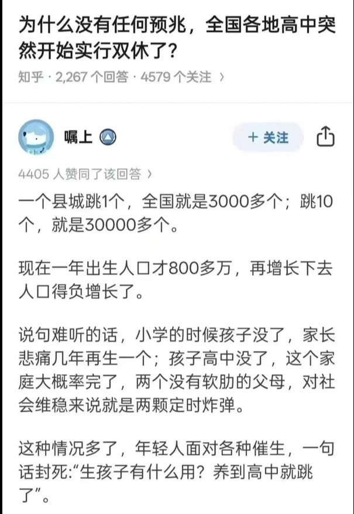

月影独下
@tadatsukiei
@LUOXIANGZY 1600人每天……我居然不怎么意外

罗翔
@LUOXIANGZY
这就是中共国内高中突然开始实行双休的真实原因，高强度的填鸭教育方式，令学生厌学抑郁的太多了，自杀已经蔚然成风，本来现在年青人已经认清中共恶毒的剥削体制，不生孩子的已经是比比皆是，生育率巨量下跌，再这样自杀下去，真的就没羊了！据真实数据统计，2024年度平均每天自杀人数至少在1600人左右… https://t.co/xKwKIuL7Kx